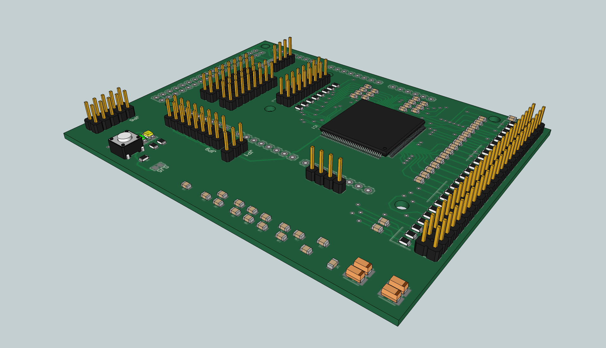

QTouchShield -
A multi-channel
capacitive touch sheild for Arduino
Table Of Contents
Introduction
to the QTouchShield Project
The QTouchShield project is designed to
allow the
Arduino users to easily develop capacitive touch based
applications. The shield is targeted at the Arduino MEGA platform, but also supports smaller boards such as the Arduino UNO.
The project consists of three key elements:
- Hardware platform - QTouchShield
- Firmware platform - Code for the microcontroller on the
QTouchShield
- Arduino library - library to be called from Arduino
sketches, supporting the capabilties of the QTouchShield
The QTouchShield project supports:
- Up to 32 configurable capacitive touch inputs based upon
the Atmel QTouch library
- Includes support for:
- Up to 32 capacitive touch buttons
- Up to 32 capacitive proximity sensors
- Up to 8 capacitive sliders (each using 3 capacitve inputs)
- Up to 8 capacitive wheels/rotors (each using 3 capactive
inputs)
Key Software
Capabilities
- Fully configurable touch sensors (configurations
as described above).
- Configurable sensitivity, touch detection hysteresis and key suppression, as supported by Atmel's QTouch library.
- 32 configurable input/output pins that can be controlled/read via the chosen serial interface or linked to a positive detection on an available touch sensor.
- Firmware upgrade support via USB stick.
The software consists of firmware for the AVR32UC3C that forms the
processing engine for the touch sensors and a matching Arduino Library
to support the capabilites of the firmware. The software will be
developed in the following phases:
- Basic configuration of multiple capacitive touch keys.
- Adds configuration of the 32 I/O pins and allows outputs to be linked to a detect on a touch channel.
- Adds advanced configuration of the capacitve sensors, supporting additionally sliders and rotors (wheels).
- Adds support for upgrading the firmware via the USB port from a USB mass storage device (USB stick).
Key Hardware
Capabilities
-
32 capacitive touch channels with
local ground pin (for coaxial cabelling).
- 32 digital input/output pins.
- Configuration via SPI interface (Arduino MEGA and UNO layouts
supported) or via the serial interface (select from one of all four
serialinterfaces on Arduino MEGA platform).
- Shield firmware upgrade via USB stick.
- Hardware design licensed under Creative Commons ShareAlike 3.0.
The shield will be available in two different flavours:
- QTouchShield-LC - supports leaded components for the resistors
and capacitors needed in each touch sensor channel. This allows easy
tuning of the components during testing.
- QTouchShield-SM - supports surface mount components for the
resistors and capacitors needed in each touch sensor channel. The board
is more compact and lighter in weight but requires a soldering iron
should the sense channels need to be tuned in hardware.
Preliminary images of the board design. First from Google SketchUp:

And a rendered version thanks to "Maxwell":
Downloading the QTouchShield files
A fully tested stable release will be available
under the downloads link on https://github.com/codinghead/touchshield/downloads.
Online
Documentation for the QTouchShield
Documentation for the project will be
made available at a later date once the system is more stable.
Return to the QTouchShield's project
home page.
Updated 10th August 2012